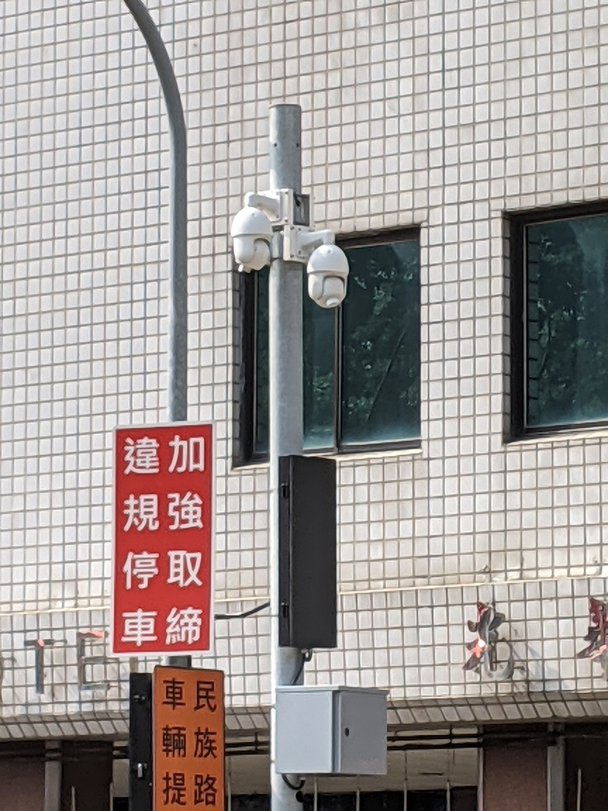

台灣智慧城市技術的
現在與未來
江明宗 @ 桃客松出任務 2022-03-23
kiang === 江明宗
2004 開始全職寫程式
2009 成立工作室接案
2016 首次進入台南市政府
2018 再次進入台南市政府
2019 台南市政府智慧城市辦公室執行秘書
2020 回到自由工作者
人在做，衛星在看
國土利用監測作業
每月 >>> 每天
Planet Labs
救災開放資料
人在做， AI 在看
道路車牌辨識
交通科技執法設備
交通感測
運輸資料流通服務
智慧路邊停車(台南)
環境感測
民生公共物聯網
無人駕駛
自駕巴士
自駕計程車
案例分享
台灣 COVID-19 本土病例地圖
地圖呈現
最新病例統計
按區、按日顯示
統計圖表
資料自動更新
保留版本記錄
開放原始碼
開放授權
最高單日
近百萬人使用
故事是這樣開始的...
疾管署版本
看到李醫師
轉發文章討論
想要一次看到
全國分佈情形
初版上線
媒體報導
疾管署配合
釋出更多資料
更多資料 = 更多功能
民眾回饋
促成持續的維運
藥局口罩
採購地圖
地圖呈現
即時庫存資訊
自動定位到手機提供座標位置
搜尋與行政區檢索
結合多項開放資料
開放原始碼
故事是這樣開始的...
唐鳳政委
在聊天室提供資訊
g0v 開始協作
政府網站連結
政府動員宣傳
大量民眾湧入